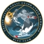
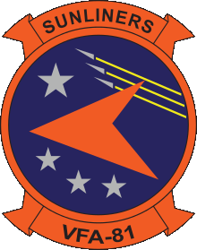
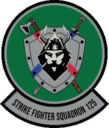

Service History

USCG USCG (https://www.gocoastguard.com)
IT Specialist 1st Class | 2021--2023 | CYBER COA Branch
- Blue Team Analyst: Developed tactical 'Ruck Kits' for field operators.
- Technical Training: Instructed Cisco switch programming, TCTO compliance, and authored guides for Nessus, Grassmarlin, Sharphound, AppDetectivePro, and Bloodhound.
- Deployment: Developed bootable WIM images; assisted FINCEN with Python/Pandas data collection.
USCG USCG (https://www.gocoastguard.com)
IT Specialist 1st Class | 2017--2021 | NOSC EOC
- Watch Supervisor: Responsible for DODIN operations and bi-weekly leadership briefs.
- Leadership: Supervised junior analysts, managed global mission scheduling, and provided continuous technical training.
USCG USCG (https://www.gocoastguard.com)
IT Specialist 2nd Class | 2014--2017 | CGC DILIGENCE
- Independent Network Admin: Managed dual Cisco 3750G stacks, Server 2008 R2, Exchange, TACLANE encryption, and KVH Satellite systems.
- Operations: Stood security watches for Law Enforcement and Anti-Terrorism Force Protection.
USCG USCG (https://www.gocoastguard.com)
IT Specialist 2nd Class | 2010--2014 | Finance Center
- Trusted Agent Security Manager (TASM): Managed Oracle database clients, Java environments, and financial software suites.
- Infrastructure: Administrated Avaya CS1000 PBX systems.
- Recognition: Awarded Commandant’s Letter of Commendation.
USCG USCG (https://www.gocoastguard.com)
IT Specialist 3rd Class | 2007--2010 | CGC LEGARE
- VMWare Admin: Managed Linux/Windows environments for guest nations during 2009 Africa mission.
- Systems: Maintained SCCS (UNIX platform) and shipboard alarm systems; Radio and Combat watchstander.

US Navy US Navy (https://www.navy.com)
Aviation Ordnanceman 3rd Class | 2003--2005 | VFA-81 Sunliners
- Deployment: USS John F. Kennedy (CV-67) for CVW-17 strike operations.
- Operations: Managed ordnance loading and arming for F/A-18 Hornets during Operations Iraqi Freedom and Al Fajr (Fallujah).

US Navy US Navy (https://www.navy.com)
Aviation Ordnanceman 3rd Class | 2001--2003 | VFA-125
- Ordnance loading team lead and flight deck operations at NAS Lemoore.
- Recognition: Awarded Letter of Commendation.